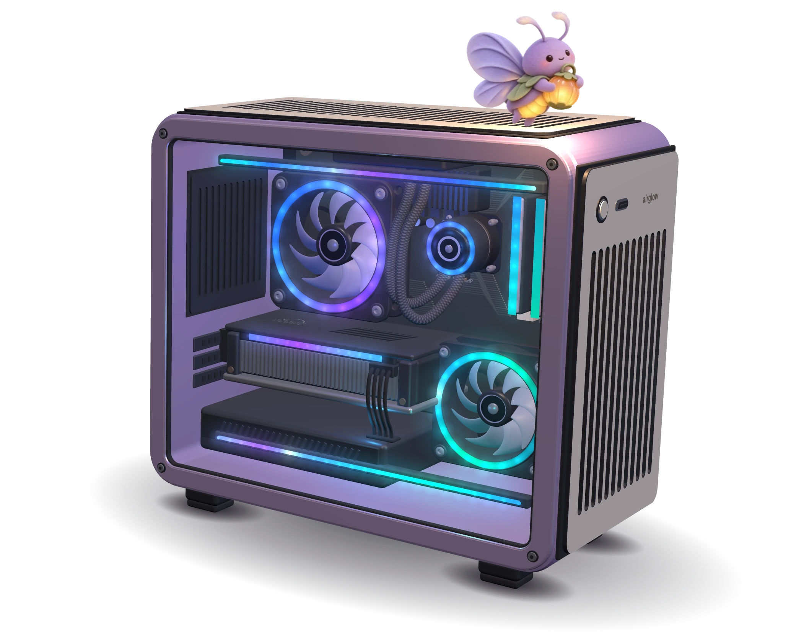
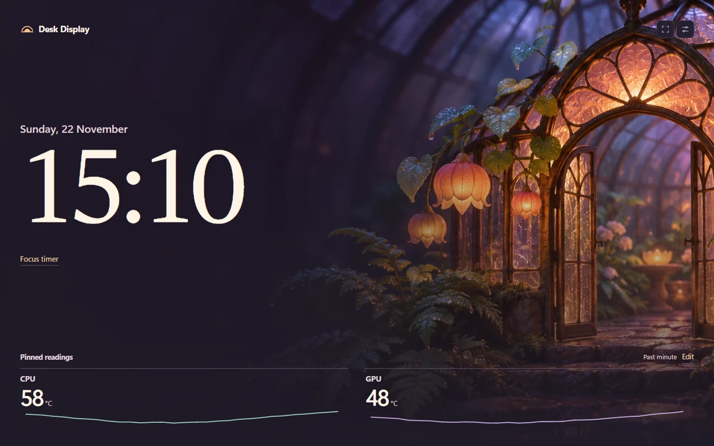
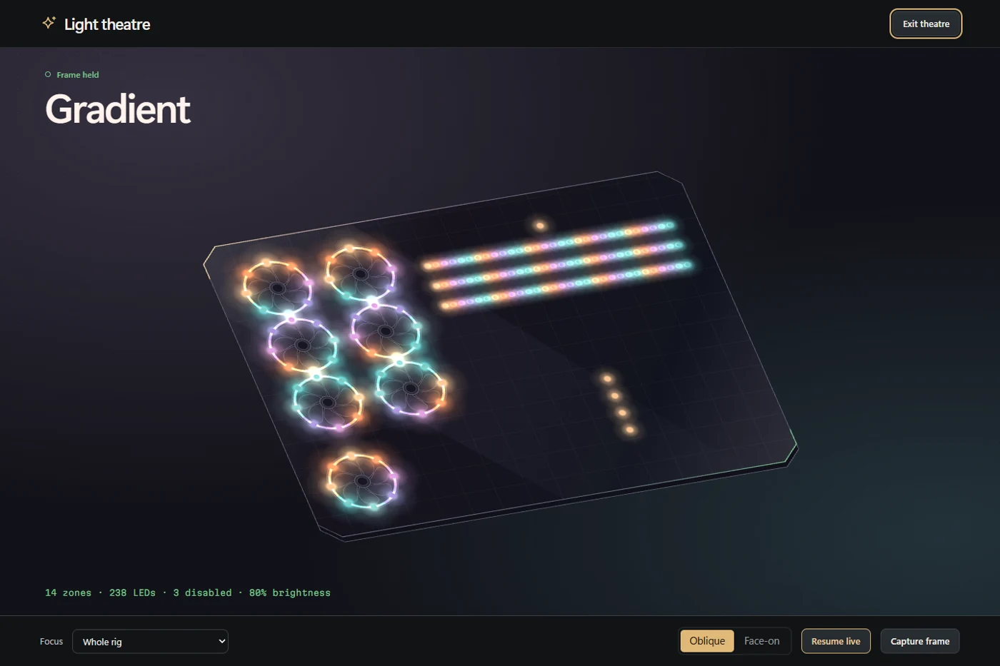
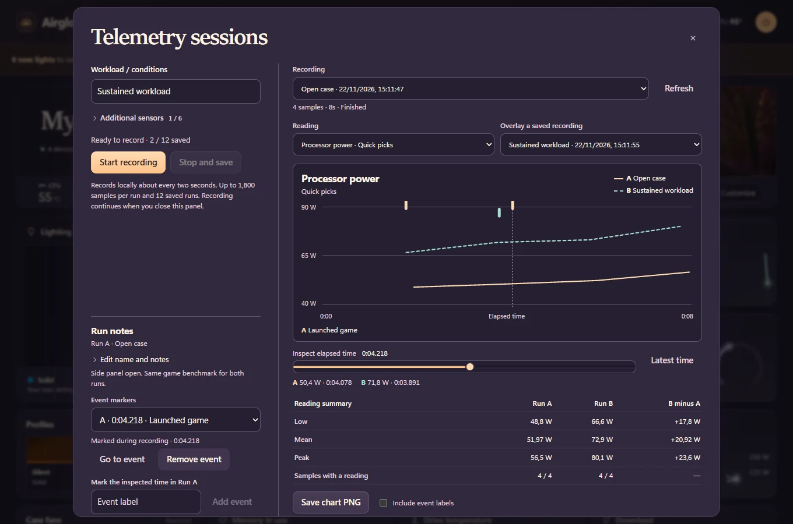

Sample LEDs
Lamplight
A steady honey light for reading, with a muted plum accent behind the case.
- Effect
- Steady
- Brightness
- 40%
Set your RGB lighting, tune your fans, and keep live readings on a second screen. Free and open source for Windows.

Six illustrated recipes, ready for your rig. Explore the palettes, then import a favorite into Airglow’s Profile Library.
A steady honey light for reading, with a muted plum accent behind the case.
Indigo and lilac drift across the case. The cooler catches a slow silver breath.
A copper streak travels around each fan and along each strip against a deep blue night.
Jade and rain-blue leaves, with a warmer amber cooler as the hottest temperature rises.
A raspberry glow follows the bass. A steady coral rear light stays on between beats.
Peach and rose move slowly up through mauve, with a soft gold line at the top.
Put a focus timer and up to four live readings beside your work. Pin the window, choose its scenery, or let the artwork change each day.

Freeze your rig’s recent LED frames, scrub through them, and change the camera angle. Export a portrait, square, or landscape image with a transparent background.

Mark the moment a workload starts and compare two sensor traces at the same elapsed time. Save the readings, event timeline, or a chart.

Airglow runs on Windows 10 and 11. Your profiles and settings stay on your PC.